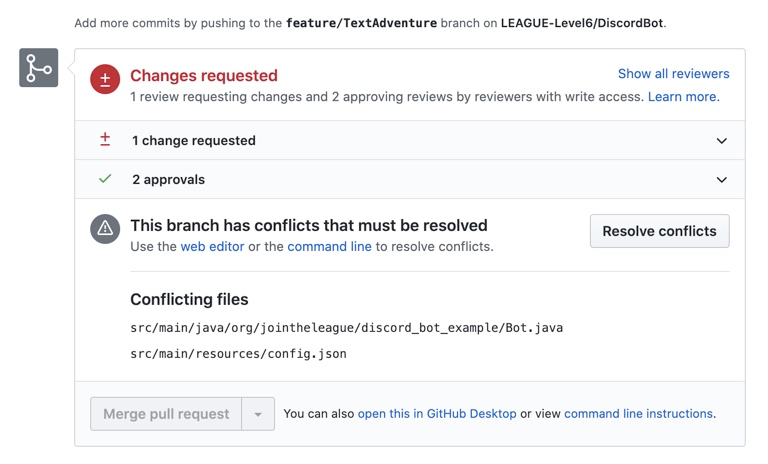
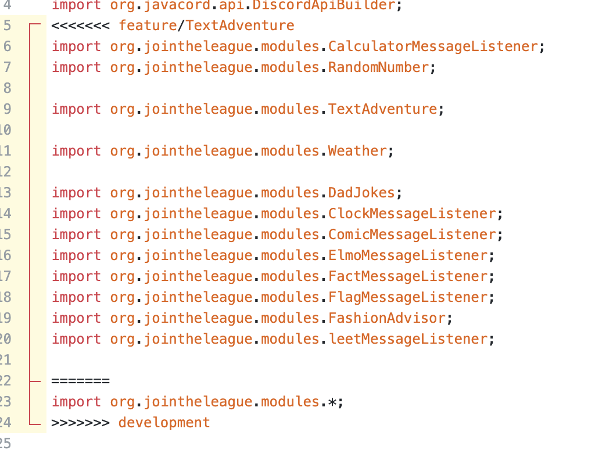

Level 6 - Resolving Merge Conflicts
Resolving Merge Conflicts
Merge conflicts occur when two branches change the same file. Git simply cannot decide which version of the changes should be kept. Here's an example scenario:
- Student A and Student B both create new branches from the development branch
- Student A changes some lines in the Bot.java class
- Student A creates a pull request and that is merged back into development
- Student B is still working on their branch, and also makes changes to the same lines in Bot.java
- When Student B finishes their feature and creates a pull request, git doesn't know which version of Bot.java it should keep, since both people changed the same lines
Here's how we could resolve that situation:
- Navigate to the pull request page inside of the repository, and click on the "Resolve conflicts" button
- You will then be redirected to a page that displays the code
- If you look closely at the code below, you will notice that git added some comments on lines 5, 22, and 24
- Line 5 indicates that the following section is from the feature/TextAdventure branch
- Line 22 indicates the end of the section
- Line 24 indicates that the code above is from the development branch
- To resolve the merge conflict we need to delete the code that we no longer want. Note that it is possible that we would want to save some code from both sections
- In the case of the current merge conflict, we can safely delete everything from lines 5-24 EXCEPT line 23. Make sure you delete the annotations that git added as well (on lines 5, 22, and 24 here)
- After resolving any other conflicts in the file, the code is ready to merge.

